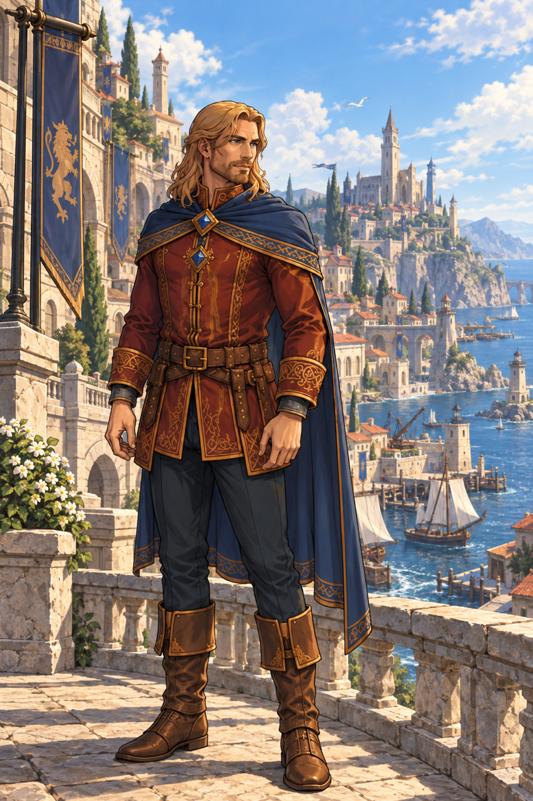

Welcome to
Breakwater Port
Ships bring fortunes, strangers and stories to Breakwater Port—a city where old families and unexpected encounters shape the lives within it.
One Port. Many Lives.
Nestled along the rugged cliffs of the southern coast, Breakwater Port stands as a sprawling gateway between sea and land. Here, sailors, merchants, noble bloodlines, and wandering strangers walk the same cobblestone alleys.
Rather than following a single isolated hero, the universe explores the interconnected webs of those who call the port home—where a choice made in the high district ripples through the lower docks.
Where Stories Cross
Sebastian Valecourt
Eldest son of House Valecourt, Sebastian moves through the city’s high society with quiet poise. Caught between family duty and the unpredictable tides of the harbor, who will he choose to become?

Lives Around Him
Every shadow in Breakwater Port harbors a story. From bustling dockyards to quiet courtyards, the figures surrounding House Valecourt carry their own ambitions, rivalries, and paths waiting to unfold.

More will be revealed when the time is right. No sooner.
Latest from the journal
One city, a lifetime of stories
The first comic follows the eldest son of House Valecourt. Future comics will remain in Breakwater Port, turning toward other lives and other corners of the city. Together, their stories will build a place larger than any single hero.
SEE THE SERIES ROADMAP →Finding the look of Breakwater Port
Harbors, heraldry and the contrast between public grandeur and private tension.
Drawing a man without giving him away
The smile, the confidence and the unanswered question beneath both.
The Journey Continues
The series begins with comic books set throughout Breakwater Port. As the universe grows, prose books may one day explore even more of its people, history and hidden corners.
Comic Book 1 in development
Story, artwork and visual world-building
More comics from the port
New central characters, one shared city
The universe may expand into prose
Books exploring more of Breakwater Port
Be there when the first tale leaves port.
Official comic-book release dates, formats and trusted stores will appear here as soon as they are confirmed.
- PRINT COMIC · TO BE ANNOUNCED
- DIGITAL COMIC · TO BE ANNOUNCED